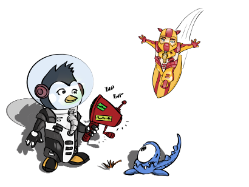

Wie kannst du teilnehmen?
Entscheide, ob du alleine oder im Team arbeiten möchtest. Falls du mit deiner ganzen Klasse teilnehmen möchtest, informiere deinen Leherer oder deine Lehrerin. Folge den beschriebenen “Ersten Schritten und Regeln” und beginne deine eigene App in kürzester Zeit mit Pocket Code zu erstellen.
Wie lerne ich meine eigene App zu programmieren?
Auch wenn du noch gar keine Programmiererfahrung hast brauchst du keine Angst zu haben. Es ist einfacher als du denkst! Zum einen kannst du dich für einen neuen und spannenden Online-Kurs anmelden, der dir die ersten Schritte beibringt!
Zum anderen findest du in der Pocket Code App unter “Hilfe” eine Tutorial-Übersicht, in der wir dir ein paar hilfreiche Beispiele
für Anfänger und Anfängerinnen zur Verfügung gestellt haben. Hinter Pocket Code steht außerdem eine sehr große Community, die dir tausende von weiteren Beispielen zur Verfügung stellt. Du findest diese in der Pocket Code App unter "Erkunden" und kannst dir bei allen alle Programmen anschauen, wie die Autoren und Autorinnen sie erstellt haben.
Finde die richtigen Zutaten für deine Programmidee
Um es dir leichter zu machen, stellen wir dir einige fertige Grafiken in unserer Mediensammlung zur Verfügung, die du während des Game Jams gerne verwenden kannst. Um mehr über diese freien Grafiken zu erfahren, lies dir bitte unsere Häufig gestellten Fragen und Antworten (FAQs) durch.
Erste Schritte und Regeln
Wenn du als Einzelperson teilnimmst, kannst du diesen Punkt überspringen. Arbeitet ihr im Team, dann überlegt euch bitte einen Teamnamen. Wollt ihr als Klasse teilnehmen, dann informiert euren Lehrer oder eure Lehrerin
über euer Vorhaben und bittet ihn oder sie das Anmeldeformular für Schulklassen auszufüllen.
Schau dir zuerst die von uns in der Mediensammlung zur Verfügung gestellten Bilder an. Sie dienen dazu dein Programm bunter zu machen und dir Ideen für eine tolle App zu geben. Du kannst selbstverständlich auch andere
Grafiken verwenden, jedoch solltest du hierbei das Urheberrecht beachten.

Da sich das Programm rund um das Thema Weltall und weit entfernte Galaxien drehen soll, überlege dir zuerst welche Art von App (Spiel, Animation, interaktive Geschichte usw) du erstellen willst und wie sie funktionieren soll. Ein paar Ideen
hast du ja vielleicht schon, nachdem du unsere Mediensammlung mit den Bildern durchstöbert hast.
Um dein Programm noch interessanter zu gestalten, kannst du gerne folgende Funktionalitäten hinzufügen (nicht alles passt zu jedem Programm, es sind also nur Vorschläge):
★ Ein Willkommensbildschirm
★ Eine kurze Erklärung
★ Ein Gewonnen-Bildschirm
★ Ein Game-Over Bildschirm
★ Töne und Geräusche
★ Sensoren
★ Einen zweiten Level
★ Kollisionserkennung
★ Eine Fremdsprache
Ein Programm einreichen
Wenn du dein Spiel fertig erstellt hast, lade es auf pocketcode.org hoch, um es dort direkt abzugeben. Dies machst du einfach über das Kontextmenü (oben rechts).
Nachdem du dich eingeloggt hast bzw. neu registriert hast, kommt der Upload-Dialog. Hier kannst du den Namen deines Spiels ändern und eine Beschreibung hinzufügen. Bitte füge dort auch den Hashtag #GalaxyGameJam hinzu. Nach dem Upload-Dialog erscheint die Meldung, dass du dir dein Spiel auf der Community Seite anschauen kannst. Klicke nun auf “Anzeigen”.
Du landest nun auf der Seite deines Programms auf unsere Community-Seite. Während dieses Events haben wir dort einen eigenen Button zum Einreichen hinzugefügt. Wenn du ein kleines Stück nach unten scrollst, findest du hier den Abgabebutton.
Klicke diesen Button, fülle den Fragebogen aus und schon ist dein Projekt abgegeben. Dein Programm ist dann auch gleich auf der Wall of Fame sichtbar. Du kannst dein Spiel danach so oft du möchtest verändern und bis 31.12.2016 um 23:59 unter dem gleichen Namen nochmals hochladen.